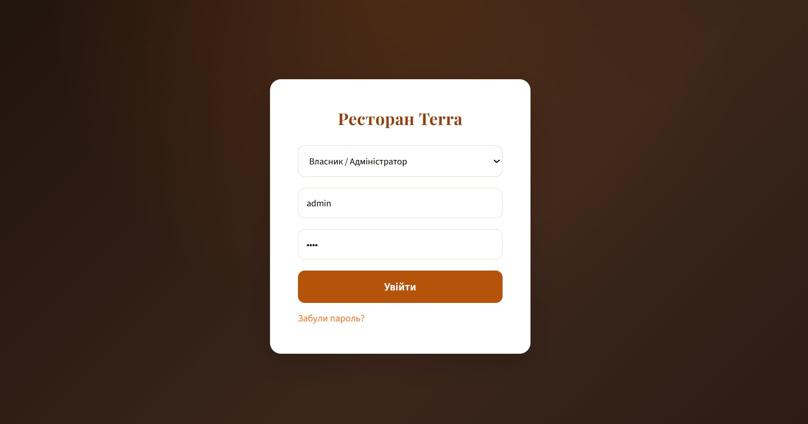
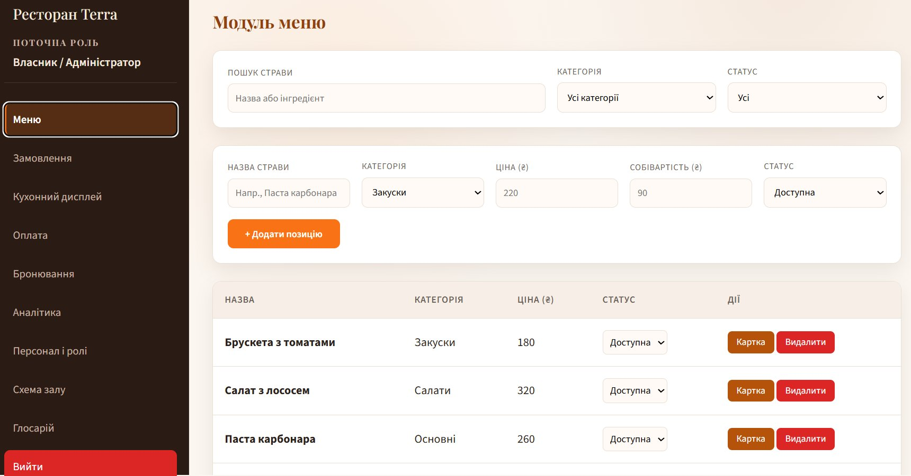

Вхід та навігація
Як розпочати роботу в системі управління рестораном Terra.
Екран входу
Перед початком роботи система відображає екран авторизації. На ньому потрібно:
- Обрати свою роль зі списку (Власник, Менеджер зміни, Офіціант, Кухар, Комірник).
- Ввести логін і пароль у відповідні поля.
- Натиснути кнопку «Увійти».

Набір доступних модулів визначається обраною роллю. Докладніше — у розділі Ролі та доступ.
Відновлення пароля
Якщо пароль забуто — натисніть посилання «Забули пароль?» під кнопкою входу.
- У вікні, що відкрилось, введіть свій e-mail або логін.
- Натисніть «Надіслати».
- Система підтвердить прийом запиту. Інструкції надійдуть на вказану адресу.
Основне вікно системи
Після успішного входу відображається двопанельний інтерфейс:
- Ліва панель (сайдбар) — навігація між модулями. Містить назву ресторану, поточну роль користувача та кнопки переходу між розділами. Активна кнопка підсвічується помаранчевим.
- Права область (контент) — робоча зона обраного модуля: фільтри, таблиця записів та картка деталей.

Кнопки модулів у лівій панелі з'являються лише ті, до яких має доступ ваша роль.
Вихід із системи
Кнопка «Вийти» розташована внизу лівої панелі. Натисніть її, щоб завершити сеанс і повернутися до екрану входу. Всі незбережені зміни в картках будуть скинуті.
Перехід за прямим посиланням
Систему можна відкрити відразу на потрібному модулі, додавши параметр ?tab= до адреси. Наприклад:
Restorant.html?tab=orders— одразу відкриє розділ ЗамовленняRestorant.html?tab=kitchen— Кухонний дисплейRestorant.html?tab=analytics— Аналітика
Прямий перехід до модуля спрацює лише якщо ваша роль має доступ до цього розділу.